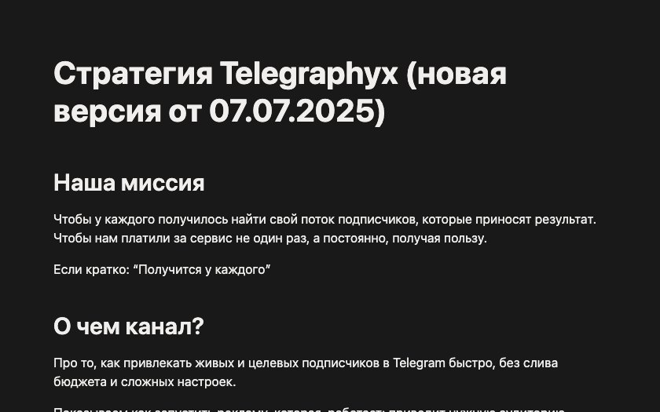
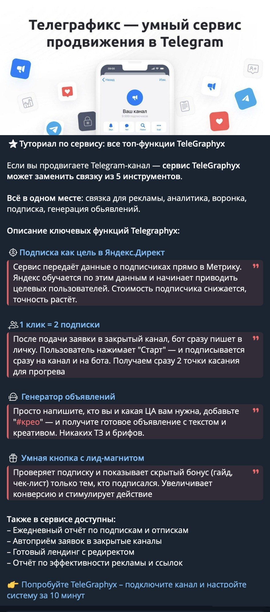
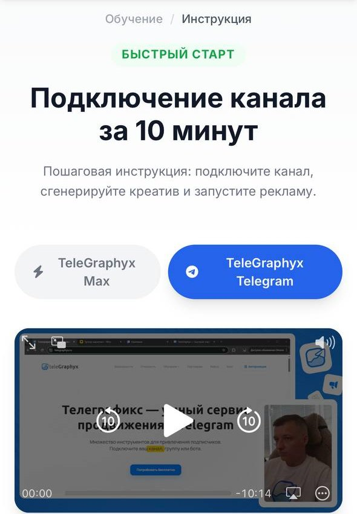
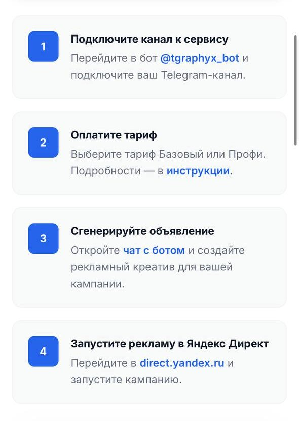
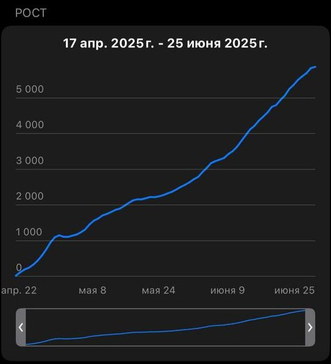

SaaS · контент в Telegram · короткий кейс
Канал сервиса и VSL-видео: 30+ платных подписок в неделю
TeleGraphyx, сервис привлечения подписчиков в Telegram · контент-маркетолог · март–август 2025
- 30+новых платных подписок в неделю
- +9 192пользователя сервиса за 5 месяцев: с 34 477 до 43 669
- 15–18%CTR оффера от охвата поста
- 6 700+подписчиков канала, было около 2 000
Задача
Увеличить через контент число пользователей сервиса и платных подписок.
TeleGraphyx помогает привлекать целевых подписчиков в Telegram через рекламу в Яндекс.Директе. Аудитория широкая: от владельцев каналов до тех, кто продаёт продвижение как услугу.
Продукт сложный: с первого касания непонятно, что делает сервис, с чего начать и за что платить. Без понятного объяснения человек не доходит ни до первого запуска, ни до платного тарифа.
Построение системы
- Пост
- VSL-видео
- Бесплатные функции
- Платный тариф
1Стратегия и контент-план
Миссия канала, 5 сегментов аудитории с болями и желаниями, тон общения, 7 рубрик с примерами тем и 3 лид-магнита, каждый под конкретную боль.

2Сложные функции – понятными постами
Каждую функцию сервиса пост объясняет по одной схеме: что это, зачем, как применить и за что платить.

3Бесплатные функции как вход
- Умная кнопка с лид-магнитом: бонус открывается только тем, кто подписался на канал.
- «1 клик = 2 подписки»: после заявки в закрытый канал бот пишет в личку, и человек подписывается и на канал, и на бота. У владельца канала появляется вторая точка касания для прогрева.
4VSL-видео – главный оффер
Бесплатный урок «Подключение канала за 10 минут» показывает главную функцию сервиса на практике: данные о подписчиках уходят в Яндекс.Метрику, реклама обучается, точнее попадает в аудиторию и снижает стоимость подписчика. Ссылка на урок стоит в конце постов как вход в воронку.


Результат
- Пользователи сервиса выросли с 34 477 до 43 669 за 5 месяцев.
- Охват постов вырос на 35–40%.
- CTR оффера – 15–18% от охвата: по ссылке на VSL-видео переходил почти каждый шестой, кто видел пост.
- Сервис вышел на стабильные 30+ новых платных подписок в неделю.
- Канал вырос с ~2 000 до 6 700+ подписчиков.

Почему это сработало
Польза до оплаты
Бесплатные функции давали результат сразу, и тариф покупали люди, которые уже видели, как работает сервис.
Урок вместо кнопки «купить»
Пост вёл на практический урок, а не на страницу оплаты. Решение о покупке человек принимал после того, как сам увидел ценность.
Рост канала шёл вместе с рекламным трафиком, который компания вела на канал.